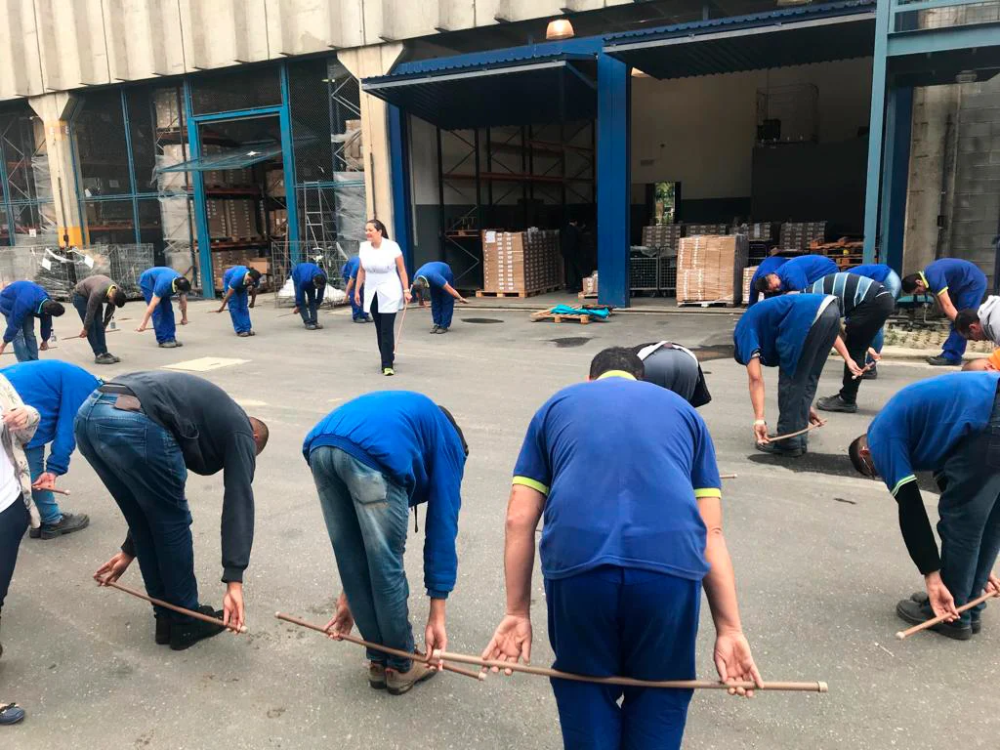

Soluções de saúde que fazem sentido para a sua empresa.
Do diagnóstico ergonômico às ações de bem-estar, cada programa pode ser adaptado ao espaço, ao perfil do público e aos objetivos da organização.

Escolha uma solução ou combine diferentes frentes.
Ergonomia e NR-17
Avaliação Ergonômica Preliminar (AEP), Análise Ergonômica do Trabalho (AET), treinamentos e orientações para adequação e prevenção.
Ginástica Laboral
Pausas ativas realizadas no ambiente de trabalho para estimular movimento e reduzir impactos relacionados à rotina ocupacional.
Quick Massage
Atendimento adaptável ao espaço da empresa, com opções em cadeira, maca ou reflexologia podal.
Palestras
Conteúdos conduzidos por profissionais capacitados, definidos de acordo com o tema e o perfil do evento.
Espaço Zen
Ambientação acolhedora com recursos de relaxamento para criar uma experiência de pausa e cuidado.
Ações de Saúde
Circuitos, avaliações posturais, bioimpedância e outras experiências que podem integrar eventos e campanhas internas.
Do briefing à execução, sem pacote engessado.
Entendimento
Mapeamos público, objetivo, local, datas e contexto da empresa.
Desenho
Selecionamos formato, profissionais e conteúdo mais adequados.
Execução
Coordenamos a experiência com foco em organização e qualidade.
Continuidade
A solução pode evoluir para ações recorrentes e programas contínuos.
Quer transformar saúde e bem-estar em uma experiência que engaja?
Conte sua necessidade. A Vida em Forma prepara uma proposta personalizada para o perfil da sua empresa, seu público e seu calendário.